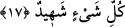

17. Mü’min olanlar, yahudi olanlar, sâbiîler, hristiyanlar, mecûsîler ve müşrik
olanlara gelince, muhakkak ki Allah, bunlar arasında kıyâmet gününde (ayrı ayrı)
hükmünü verir. Çünkü Allah her şeyi hakkıyla bilendir.
“Mü’min olanlar,” îman edilmesi gereken her şeye îman edenler “yahudi olanlar,”
yahudilik dinine girenler “sâbiîler,” yâni bütün dinlerden çıkıp meleklere ve yıldızlara
ibâdeti seçenler “hıristiyanlar, mecûsîler ve müşrik olanlara” yâni putlara tapanlara
“gelince,”
Râğıb der ki: “el-Hevd” yavaşça dönmek demektir. Tevbe için kullanılır olmuştur.
Allah Teâlâ: “__WORD__ Şüphesiz biz sana döndük” (el-A’râf, 7/156) yâni sana tevbe
ettik, buyurmuştur. Bazıları “el-yehûd” kelimesinin aslında onların “__WORD__ sözünden
geldiğini söylemiştir. Bu bir medih ismiydi. Onların şerîatının nesh edilmesinden sonra
artık bir medih mânâsı taşımasa da onlarda kaldı. Nitekim “en-Nasârâ” kelimesi aslında
“__WORD__Allah’a (giden yolda) benim yardımcılarım kimdir?” (es-Saff,
61/14) sözünden alınmıştır. Onların şerîatının nesh edilmesinden sonra da onlarda
kaldı.
Râğıb der ki: “Sâbiîler, Nuh (a.s.)’ın dini üzere olan bir kavimdi. Bir dinden çıkıp
başka bir dine giren herkese ‘sâbiî’ denildiği de söylenmiştir.
el-Kâmûs’ta der ki: “Mecûs” kulakları küçük adam demektir. Bu adam bir din
uydurmuş ve insanları ona dâvet etmiştir. Bu kelime Farsça “Menc gûş” kelimesinden
Arapçalaşmıştır. Mecûsîler ateşe tapan kimselerdir ve ehl-i kitabdan değildirler. Bu
yüzden kadınları ile evlenilmez ve kestikleri yenilmez. Onlardan sadece cizye alınır.
“Muhakkak ki Allah, bunlar arasında kıyâmet gününde (ayrı ayrı) hükmünü verir.”
Yâni mü’minler ile küfür milleti üzere ittifak eden beş fırka arasında hak üzere olanı
bâtıl üzere olandan ayırıp ortaya çıkararak, hak ettiklerine göre birincileri
mükâfâtlandırarak ve ikincileri cezâlandırarak hükmünü verir. Yâni Allah Teâlâ kıyâmet
gününde onlardan her sınıfa hak ettiği şekilde ya cennet nimetleriyle ya da cehennem ile,
ya vuslat veya ayrılık ile muâmele eder.
Âyetten dinlerin altı olduğu anlaşılmaktadır. Onlardan biri Rahmân’a âittir. O da
mü’minlerin dîni olan İslâm’dır. Nitekim Allah Teâlâ: “Allah nezdinde hak din
İslâm’dır.” (Âl-i İmrân, 3/19) buyurmuştur. Bu dinlerden beşi ise şeytana âittir. Onlar
İslâm dışındaki dinlerdir. Çünkü bu dinler şeytanın kendilerine dâvet ettiği ve kâfirlerin
gözlerinde süslediği dinlerdir.
“Çünkü Allah her şeyi hakkıyla bilendir.” şâhiddir ve her hâl ve davranıştan
haberdardır. İmam Gazzâlî (r.h.) şöyle der: “eş-Şehîd” kelimesinin mânâsı, özel bir
izâfetle ilimle ilgilidir. Çünkü Allah Teâlâ, gaybı ve şehâdeti bilendir. Gayb bâtın/gizli
olandan, şehâdet ise zâhir/açık olandan ibârettir. Zâhir olan müşâhede
edilen/görülendir. Mutlak ilim dikkate alındığında Allah mutlak olarak Alîm’dir/her